Almost everyone can reminisce back to a time where they had their eyes affixed to a "Where's Waldo" puzzle, where one has to find the brightly clad and elusive "Waldo" in his signature striped red shirt.
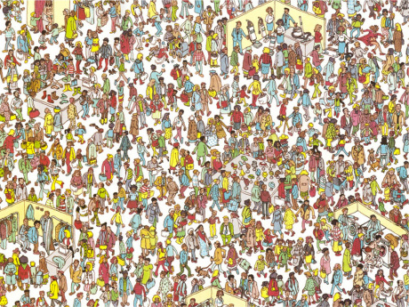
This was my experiment in searching for the defining characteristics of Waldo with an image processing routine that a computer could perform- essentially, an automated way to find striped red things. The idea was to create a function that could input a Waldo image and output an image with regions of the image highlighted, so a human could quickly scan the image to find Waldo. I used Mathematica's powerful image processing functions and came up with several solutions.
Highlighting red areas
A straightforward way to aid a human in finding Waldo would be to simply highlight all red regions of the image.
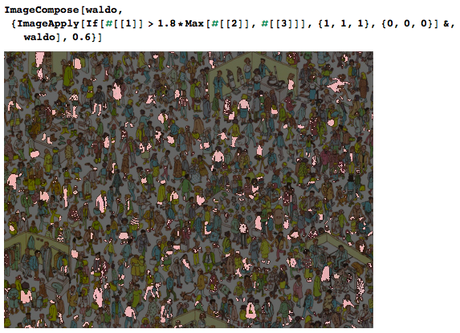
But this is still tedious, since there are many red regions in the image, although the darkening effect does make it easier to pick out the striped pattern of Waldo's shirt.
Partitioning with heuristics
Using the ImagePartition function, an image can be divided into smaller sub-regions.
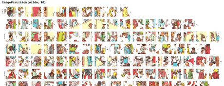
Each of these sub-regions can be put through a heuristic function which calculates the similarity between the subregion and Waldo's striped shirt. Regions that are more red and more striped should get a higher value, while regions that obviously don't contain Waldo should be blurred out. For example, using MorphologicalComponents, one can count the number of morphs in a particular image.
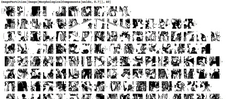
By accounting for morphological components, a more accurate likelihood can be assigned to each partition.
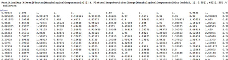
I combined these into a simple heuristic function that takes the proportion of red content and horizontal morphological components into account.
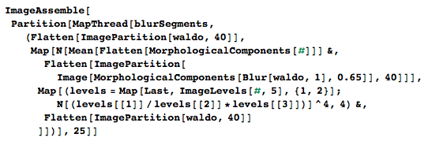
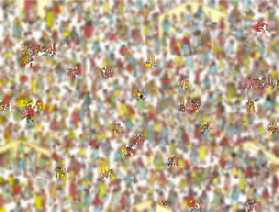
After examining the un-blurred segments, it is straightforward to see that Waldo is in the top left corner. After changing the process by which the color components were being analyzed and reducing to a single threshold constant, I was able to make a much more accurate and reproducible search function.
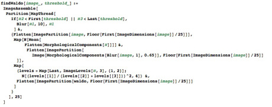
This function is much more effective at finding the partition with Waldo.
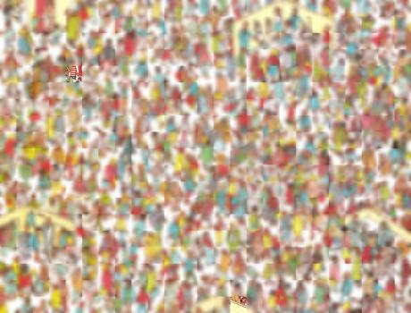
It's great that it works on this one image, but maybe I just got lucky. I pulled up a couple more Where's Waldo images and ran the findWaldo function on each of them with a range of threshold values. For example, with the image below:
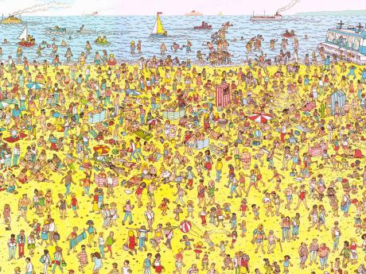
I used Map to run findWaldo on a this Where's Waldo image with a range of threshold values.
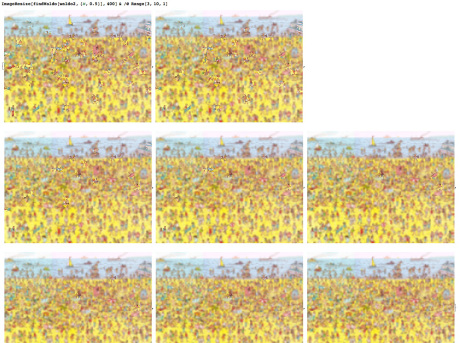
As the threshold gets higher, more of the image should be eliminated. This was an effective way to find the best threshold value for a particular image, and could accurately eliminate most of the partitions for simple Waldo puzzles.
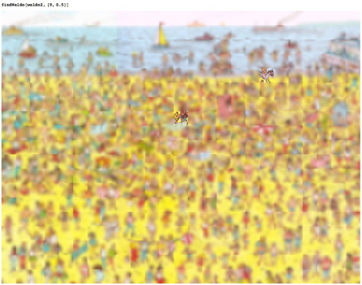
However, for complex images the number of morphs drastically alters the heuristic value, and cause false negatives for higher threshold values. For example, the complex Waldo image below:
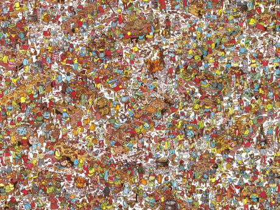
will eliminate the partition with Waldo once the threshold goes beyond the one used to generate the solution below. However, it will continue to show partitions where Waldo couldn't possibly be.
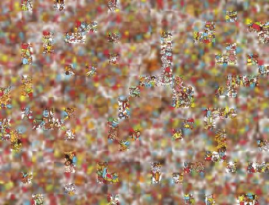
For simple Waldo puzzles, component counts are low and striped regions have a uniquely identifiable frequency of morphological components. For all the complex Waldo puzzles I tested, the complexity of each partition reduced the heuristic function's effectiveness at assigning an accurate value.
I tried several continuations from this approach, namely
- applying a Gaussian blur to each region proportional to the amount of red in the region, which was somewhat effective at reducing false positives but did not help with false negatives.
- using a matrix reduction to look specifically for the red-white stripe pattern, but this got too complicated very fast.
- using the
ImageKeypointsfunction to search for keypoints, and weighing the heuristic using geometric relations between the keypoints. The geometric heuristic counted the number of parallel lines that can be drawn using exclusive pairs of keypoints. Combining this heuristic into thefindWaldofunction greatly improved the accuracy on simple images, but the number of keypoints on complex images caused the number of permutations of keypoints to grow exponentially for each partition. This also didn't eliminate the false positive issue.
Neighborhood searching
The method that worked best was to isolate the red channel of the image, then search n x n neighborhoods of pixels to measure statistical characteristics. With InterquartileRange, QuartileDeviation, and QuartileSkewness, striped red regions can be isolated by their average pixel values.
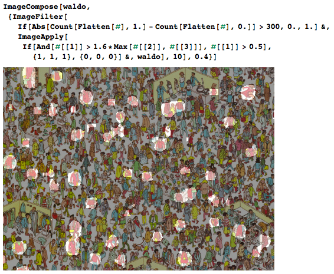
I'll keep posting more code snippets as I come up with better neighborhood evaluation functions.